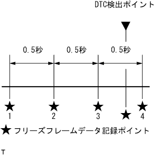

|
The new diagnostic system is a new failure diagnosis system that supports the sophistication and complicated vehicle electronics system.The function of this failure diagnostic system can be used by the diagnostic tool TASCAN.
How to troubleshoot the ECU control system new diary system |
| Diagnostic content | Diagnosis procedure concept | |
|---|---|---|
| Diag code diagnosis | Describe the diagnosis procedure when the diameter code is output at this time | The output condition of the diag code is specified by the elimination method using a single inspection or diagnostic device. |
| Diagnosis by defective symptoms | The diagnosis procedure is described if the diameter code is not output but the defect symptoms have occurred at this time. | The cause of the defective symptoms, except for the conditions in which the diag code outputs, is specified by the elimination method using a single inspection and diagnostic device. |
|
The new diagnostic system is a new failure diagnosis system that supports the sophistication and complicated vehicle electronics system.The function of this failure diagnostic system can be used by the diagnostic tool TASCAN.
The diagnostic tool TASCAN corresponding to this new diagnosis has the functions shown in the table below.
| function | overview | |
|---|---|---|
| diagnosis | Vehicle diagnosis | All diag |
| Can bus diagnosis | ||
| System diagnosis | Diag code freeze data | |
| ECU data monitor | ||
| Active test | ||
| Mode migration | ||
| Confirmation of the diag judgment result | ||
| Freeze data at the time of operation | ||
| Test mode inspection | ||
| Basic inspection | ||
| Special operation/control history | ||
| Multi -data monitor | ||
| Electronic key or wireless diagram mode | ||
| Key registration / erasure | Registration / erasure of wireless key, etc. | |
| Work support | Work support function required for ECU and actuator replacement | |
| Save data | Play / delete function of saving data | |
| Customization | Confirmation / change function of customization item according to the user's request | |
| measurement | Equipped with voltage measurement and oscilloscope function | |
| Computer sensor name | Diag code reading (Normal mode) | Diag code reading (Check mode, test mode) | Freeze frame data reading (Computer data in the event of a failure) | Data monitor reading and saving/display | Active test | Communication line with Tascan |
|---|---|---|---|---|---|---|
| Engine ECU | ○ | ○ | ○ (*) | ○ | ○ | SIL |
| Skid control ECU | ○ | ○ | ○ (Note) | ○ | ○ | SIL |
| Airbag ECU | ○ | ○ | - | - | - | SIL |
Connection with vehicles
Connect Tascan to the DLC3 (data link connector No.3) installed near the driver's seat foot.
How to use the diagnostic tool TASCAN
When the power switch of the diagnostic tool TASCAN is turned on, the menu screen is displayed.
Select the items you want to implement arbitrarily, and then proceed to work according to the instructions on the screen.
|  |
Connect Tascan to DLC3.
Ig ON.
Display the [Diagnosis] → [Freeze Data] screen and select the data item.
After selecting the item, check the data of each point.

 |
With the adoption of the new diamond system, functions were integrated in DLC3 (installed at the bottom of the driver's instrument panel).
DLC3 terminal name and function
| Terminal name | function |
|---|---|
| BAT | Battery power supply |
| Canl | Diag CAN communication with each computer |
| TC | Diag code (lamp) output instruction |
| TS | Test mode output instruction |
| TAC | Engine speed output |
| LVL | Headlight leveling maintenance support |
| SIL | Diag communication with each computer |
| Canh | Diag CAN communication with each computer |
| WFSE | ECU program rewriting |
| CG | Bodies ground |
TASCAN's power indicator non -lit
Connect Tascan to other vehicles and start Tascan.
| Operating state | Bug | Checkpoint |
|---|---|---|
| When Tascan's power indicator lights red or green | Vehicle side |
|
| When the TASCAN power indicator does not turn on | TASCAN body | - |
 |
When a system diagnosis is pressed in the diagnostic menu, all system names are not displayed, which is compatible with diagram communication and diagram CAN communication.
Once the IG switch and Tascan power switch are turned off, start Tascan again, press the [Return] key and check the condition when the diagnostic menu is displayed.
| Operating state | Bug | Checkpoint |
|---|---|---|
| Do not display all system names | TASCAN body | - |
| Do not display system names for diages | Vehicle side |
|
| Do not display system names for diagen CAN communication | Vehicle side | Control system CAN communication troubleshooting procedure 5 [DLC3 Inspection (CANH-CANL)] Conducted CAN communication by steps afterwards |
| Do not display one system name for diagram communication | Vehicle side |
|
| Do not display one system name for Diag CAN communication | Vehicle side | Control system CAN communication troubleshooting procedure 3 Conducted CAN communication in the procedure after [Diagcode Confirm] |